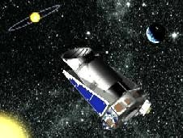
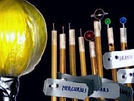
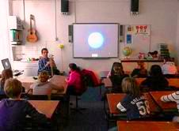

Bij projecten, bestaande uit vier middagen les met bijbehorende activiteiten, maken we onder andere een schaalmodel van het zonnestelsel in een plaatselijk park of plantsoen, worden waterraketten gelanceerd, maken de kinderen een draaibare sterrenkaart waarmee ze zelf thuis dingen aan de hemel kunnen vinden en kijken ze door een echte telescoop. Desgewenst kan ook op locatie een waarnemingsavond met telescoop worden verzorgd, bijvoorbeeld op een avond van een werkweek. Bij slecht weer is er een vervangende activiteit. De tijdsindeling van projecten wordt aangepast aan de wensen van uw school.

De leskosten worden in overleg vastgesteld. De school dient te zorgen voor een beamer en een goed verduisterd lokaal. Voor buitenactiviteiten hebben de kinderen een weerbestendige jas en schoenen nodig. Een verantwoordelijke docent van de school dient tijdens lessen en buitenactiveiten aanwezig te zijn.
